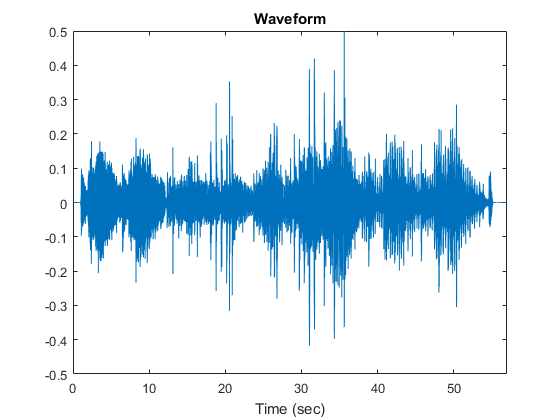
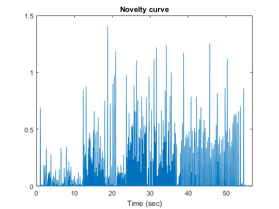
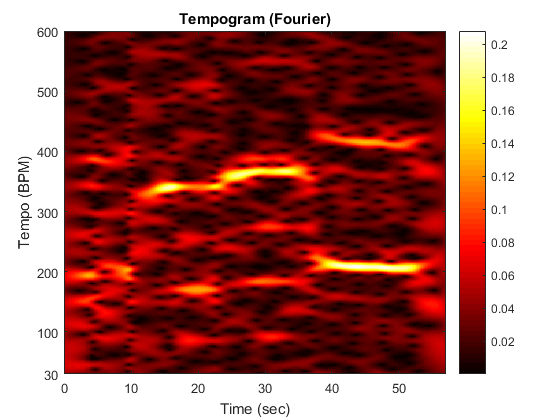
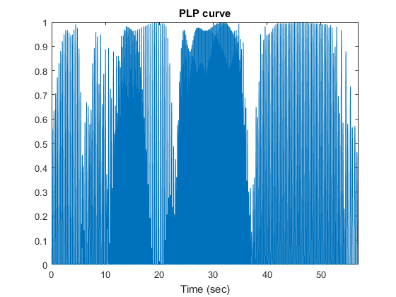
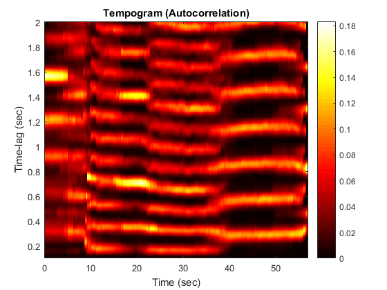
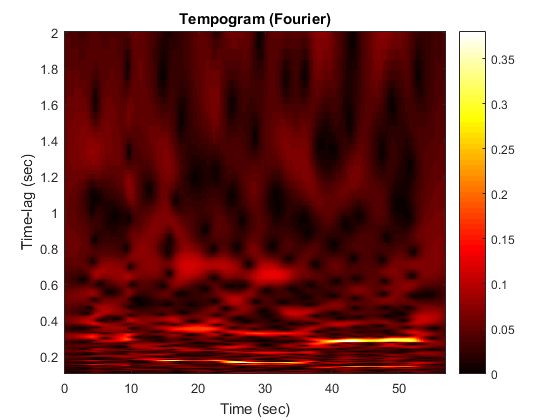
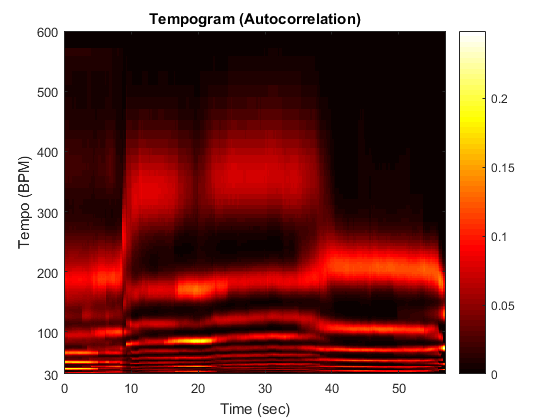
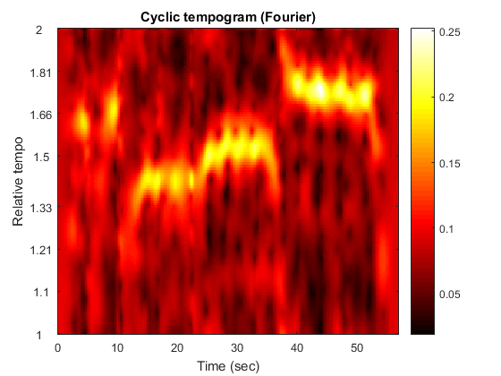
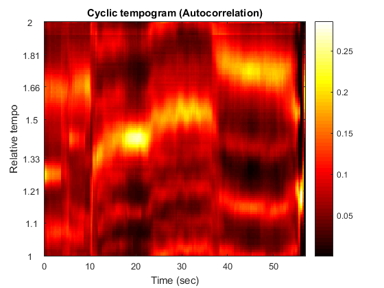
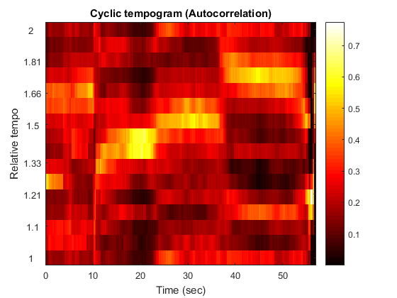

Contents
clear
close all
dirWav = 'data_wav/';
filename = 'Debussy_SonataViolinPianoGMinor-02_111_20080519-SMD-ss135-189.wav';
load wav file, automatically converted to Fs = 22050 and mono
[audio,sideinfo] = wav_to_audio('',dirWav,filename);
Fs = sideinfo.wav.fs;
figure; plot((0:length(audio)-1)/Fs,audio);
xlim([0 length(audio)/Fs]);
ylim([-0.5 0.5])
xlabel('Time (sec)')
title('Waveform')

compute novelty curve
parameterNovelty = [];
[noveltyCurve,featureRate] = audio_to_noveltyCurve(audio, Fs, parameterNovelty);
parameterVis = [];
parameterVis.featureRate = featureRate;
visualize_noveltyCurve(noveltyCurve,parameterVis)
title('Novelty curve')

tempogram_fourier
parameterTempogram = [];
parameterTempogram.featureRate = featureRate;
parameterTempogram.tempoWindow = 8;
parameterTempogram.BPM = 30:1:600;
[tempogram_fourier, T, BPM] = noveltyCurve_to_tempogram_via_DFT(noveltyCurve,parameterTempogram);
tempogram_fourier = normalizeFeature(tempogram_fourier,2, 0.0001);
visualize_tempogram(tempogram_fourier,T,BPM)
title('Tempogram (Fourier)')

PLP curve
parameterPLP = [];
parameterPLP.featureRate = featureRate;
parameterPLP.tempoWindow = parameterTempogram.tempoWindow;
[PLP,featureRate] = tempogram_to_PLPcurve(tempogram_fourier, T, BPM, parameterPLP);
PLP = PLP(1:length(noveltyCurve));
parameterVis = [];
parameterVis.featureRate = featureRate;
visualize_noveltyCurve(PLP,parameterVis)
title('PLP curve')

tempogram_autocorrelation_timeLagAxis
parameterTempogram = [];
parameterTempogram.featureRate = featureRate;
parameterTempogram.tempoWindow = 8;
parameterTempogram.maxLag = 2;
parameterTempogram.minLag = 0.1;
[tempogram_autocorrelation_timeLag, T, timeLag] = noveltyCurve_to_tempogram_via_ACF(noveltyCurve,parameterTempogram);
tempogram_autocorrelation_timeLag = normalizeFeature(tempogram_autocorrelation_timeLag,2, 0.0001);
parameterVis = [];
parameterVis.yAxisLabel = 'Time-lag (sec)';
visualize_tempogram(tempogram_autocorrelation_timeLag,T,timeLag,parameterVis)
title('Tempogram (Autocorrelation)')

tempogram_fourier_timeLagAxis
[tempogram_fourier_timeLag,timeLag] = rescaleTempoAxis(tempogram_fourier,60./BPM,timeLag);
tempogram_fourier_timeLag = normalizeFeature(tempogram_fourier_timeLag,2, 0.0001);
parameterVis = [];
parameterVis.yAxisLabel = 'Time-lag (sec)';
visualize_tempogram(tempogram_fourier_timeLag,T,timeLag,parameterVis)
title('Tempogram (Fourier)')

tempogram_autocorrelation_tempoAxis
[tempogram_autocorrelation,BPM] = rescaleTempoAxis(tempogram_autocorrelation_timeLag,60./timeLag,BPM);
tempogram_autocorrelation = normalizeFeature(tempogram_autocorrelation,2, 0.0001);
visualize_tempogram(tempogram_autocorrelation,T,BPM)
title('Tempogram (Autocorrelation)')

cyclicTempogram_fourier, 120 dim
octave_divider = 120;
parameterTempogram = [];
parameterTempogram.featureRate = featureRate;
parameterTempogram.tempoWindow = 5;
parameterTempogram.BPM = 30*2.^(0:1/octave_divider:4);
parameterCyclic = [];
parameterCyclic.octave_divider = octave_divider;
[tempogram_fourier, T, BPM] = noveltyCurve_to_tempogram_via_DFT(noveltyCurve,parameterTempogram);
[cyclicTempogram_fourier] = tempogram_to_cyclicTempogram(tempogram_fourier, BPM, parameterCyclic);
cyclicTempogram_fourier = normalizeFeature(cyclicTempogram_fourier,2, 0.0001);
visualize_cyclicTempogram(cyclicTempogram_fourier,T)
title('Cyclic tempogram (Fourier)')

cyclicTempogram_fourier, 15 dim
octave_divider = 15;
parameterTempogram = [];
parameterTempogram.featureRate = featureRate;
parameterTempogram.tempoWindow = 5;
parameterTempogram.BPM = 30*2.^(0:1/octave_divider:4);
parameterCyclic = [];
parameterCyclic.octave_divider = octave_divider;
[tempogram_fourier, T, BPM] = noveltyCurve_to_tempogram_via_DFT(noveltyCurve,parameterTempogram);
[cyclicTempogram_fourier] = tempogram_to_cyclicTempogram(tempogram_fourier, BPM, parameterCyclic);
cyclicTempogram_fourier = normalizeFeature(cyclicTempogram_fourier,2, 0.0001);
visualize_cyclicTempogram(cyclicTempogram_fourier,T)
title('Cyclic tempogram (Fourier)')

cyclicTempogram_autocorrelation, 120 dim
octave_divider = 120;
parameterTempogram = [];
parameterTempogram.featureRate = featureRate;
parameterTempogram.tempoWindow = 5;
parameterTempogram.maxLag = 2;
parameterTempogram.minLag = 0.125;
[tempogram_autocorrelation_timeLag, T, timeLag] = noveltyCurve_to_tempogram_via_ACF(noveltyCurve,parameterTempogram);
parameterCyclic = [];
parameterCyclic.octave_divider = octave_divider;
[cyclicTempogram_autocorrelation] = tempogram_to_cyclicTempogram(tempogram_autocorrelation_timeLag, 60./timeLag, parameterCyclic);
cyclicTempogram_autocorrelation = normalizeFeature(cyclicTempogram_autocorrelation,2, 0.0001);
visualize_cyclicTempogram(cyclicTempogram_autocorrelation,T)
title('Cyclic tempogram (Autocorrelation)')

cyclicTempogram_autocorrelation, 15 dim
octave_divider = 15;
parameterTempogram = [];
parameterTempogram.featureRate = featureRate;
parameterTempogram.tempoWindow = 5;
parameterTempogram.maxLag = 2;
parameterTempogram.minLag = 0.125;
[tempogram_autocorrelation_timeLag, T, timeLag] = noveltyCurve_to_tempogram_via_ACF(noveltyCurve,parameterTempogram);
parameterCyclic = [];
parameterCyclic.octave_divider = octave_divider;
[cyclicTempogram_autocorrelation] = tempogram_to_cyclicTempogram(tempogram_autocorrelation_timeLag, 60./timeLag, parameterCyclic);
cyclicTempogram_autocorrelation = normalizeFeature(cyclicTempogram_autocorrelation,2, 0.0001);
visualize_cyclicTempogram(cyclicTempogram_autocorrelation,T)
title('Cyclic tempogram (Autocorrelation)')
